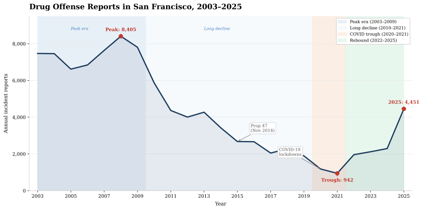

The fall and rise of drug crimes in San Fransisco
Introduction
Between 2003 and 2025, the San Francisco Police Department recorded more than 950,000 incidents across ten categories of crime. For this data story, we focus on one of those categories: drug offenses.
The dataset combines two SFPD incident report systems: the historical archive covering 2003 to May 2018, and the current reporting system from 2018 onward. Each row is a single reported incident, with a date, time, police district, and category. A drug offense in this dataset means a police officer filed a report, which reflects enforcement activity as much as it reflects actual drug use or dealing. This is an important distinction to note, and one we will return to it.
The data shows an interesting pattern: a long decline followed by a sharp rebound. In 2008, SFPD logged 8,405 drug offense reports — the highest in the dataset. Over the next thirteen years, that number continued to fall, bottoming out at just 942 in 2021, a drop of nearly 89%. Then it turned around. By 2025, drug reports had climbed back to 4,451, nearly five times the 2021 low.
This rise and fall is not spread evenly across the city. In our analysis, one neighborhood stands out: the Tenderloin. The Tenderloin is a dense, historically low-income district north of City Hall. Across the entire 22-year span, the Tenderloin area accounts for roughly a third of all drug offense reports in San Francisco. The story of drug offenses in SF is, in large part, the story of one neighborhood.
But what drives these swings? The data alone cannot tell us. A drop in reported drug offenses might mean less drug activity — or it might mean fewer arrests, a shift in enforcement priorities, or a policy change that reclassified certain offenses. California's Proposition 47 (passed in November 2014), which downgraded simple drug possession from a felony to a misdemeanor, almost certainly shaped the numbers in the years that followed. The COVID-19 pandemic upended enforcement in 2020 and 2021. And San Francisco's ongoing fentanyl crisis has drawn intense political pressure since 2022. All of these forces leave fingerprints in the data — but the data cannot tell us which fingerprint belongs to which hand.
Annual Drug Offense Reports, 2003–2025
The chart below shows the annual count of drug offense reports citywide. Three eras stand out: the long decline from the 2008 peak, the COVID trough of 2020–2021, and the sharp rebound since 2022.

Figure 1 — Annual drug offense reports filed by SFPD, 2003–2025. Reports peaked at 8,405 in 2008 before entering a 13-year decline driven by shifting enforcement priorities, the passage of California's Proposition 47 (which downgraded simple drug possession from a felony to a misdemeanor in November 2014), and reduced street-level enforcement during the COVID-19 pandemic. The 2021 trough of 942 reports represents an 89% drop from the 2008 peak. Since 2022, reports have risen sharply — reaching 4,451 in 2025 — coinciding with intensified enforcement responses to San Francisco's fentanyl crisis. Note that a change in reported incidents reflects both actual activity and enforcement choices; the same pattern could result from more drug use, more policing, or both.
The Fall
From 2003 to 2021, recorded drug offense incidents in San Francisco fell sharply, dropping from 7,468 to 913 and declining especially fast after the late-2000s peak. The central story is the citywide collapse in recorded incidents, not neighborhood variation, though one important feature of the trend is that the remaining incidents became increasingly concentrated in the Tenderloin district over time.
One possible explanation for the decline is Proposition 47, passed in California in 2014, which reclassified several low-level drug and property offenses from felonies to misdemeanors. According to PPIC, arrests for drug and property crimes fell after those offenses were reclassified, making Prop 47 a plausible contributor to San Francisco's drop in recorded drug offense incidents. At the same time, PPIC is careful not to overclaim: it finds no evidence that changes in drug arrests after Prop 47 led to increases in crime, but it also says the data do not show whether substance use or addiction changed. In other words, Prop 47 may help explain why fewer drug offenses were being recorded, but it does not prove that the underlying drug problem itself became smaller. [4]
Another possible contributor to the decline in recorded drug offense incidents is cannabis decriminalization and broader marijuana policy reform. A large US study found that cannabis decriminalization was associated with substantial reductions in cannabis possession arrest rates during the 2010s—roughly 40% to 80%—and makes clear that this was a broader national pattern, not something unique to California or San Francisco. [5] In San Francisco specifically, the city reinforced that shift in 2006 by making law enforcement activity related to adult marijuana offenses its lowest law-enforcement priority, covering actions such as investigation, citation, arrest, and seizure of property, while carving out exceptions such as sales to minors, public sales, and DUI.[6] Together, these changes make it plausible that part of the long-run drop in San Francisco's recorded drug offense incidents reflects changing cannabis enforcement priorities rather than only a simple decline in underlying drug activity
Another notable pattern is that the decline in recorded drug offenses was not geographically uniform. While incidents fell sharply citywide, the remaining activity became more concentrated in the Tenderloin district over time, making that neighborhood an increasingly central focal point in the city's drug-offense landscape. This interpretation is consistent with later reporting and official city statements showing that drug incidents and overdoses remained heavily concentrated in Tenderloin even as the broader citywide totals had fallen. [7]
Drug Offense Concentration Across San Francisco, 2003–2025
Figure 2 — Heatmap of recorded drug offense incidents by location and police district, 2003–2025. Use the time slider to move year by year. Brighter areas indicate higher concentrations of recorded incidents, while the district outlines show how the geography of drug enforcement shifted over time. The map makes the broader pattern visible: even as citywide incidents fell, activity became increasingly concentrated in and around the Tenderloin.
The Rise
Around 2022 drug crimes started to increase dramatically, and the ratio of drug crimes compared to other crimes also increase. When compared with other crime types in San Fransisco, more specifically assault, burglary, fraud, missing person, prostitution, robbery, vandalism and weapons, drug crimes only accounted for 2.5% of the total crimes within this group in 2021, but in November 2025 this was up to 23%, overtaking assault as the most prelavent of these crime types. There are a number of ways to interpret the reason for this sharp increase during the last couple of years, and multiple factors likely contribute to the reason, with some of the reasons including the opioid crisis in california and more crackdown on drugs.
San Fransisco is dealing with an opioid epidemic and fentanyl, among other synthetic opioids have gained much ground since 2019, and are significantly more cheap in San Fransisco compared to other places in the United States such as New York. [1] From 2018 until 2020 drug overdose deaths in San Fransisco almost tripled, going from 259 to 726 deaths, with most of those deaths being attributed to fentanyl. [2]
The response to this drug crisis has been drastic, and between 2019 and 2023 the state of California spent around 1 billion dollars to try and address this issue, with around half of that money coming from the states general fund, and the other half from the federal government. These efforts have focused on prevention, treatment, and medication-assisted care [8], however that is not the only thing being done to combat the crisis. Another big strategy has been more crackdown on drugs, and in November 2023 the All Hands on Deck initiative was announced which brought together local, state and federal agents to tackle the drug epidemic in San Fransisco. [3]
Conclusion
Conclusion here....
Bibliography
- Wikipedia contributors. California opioid crisis.
- ABC7 News. 2023 is SF's deadliest year ever for drug overdoses; solution to crisis may be in wastewater.
- U.S. Drug Enforcement Administration. U.S. Attorney and Federal Law Enforcement Officials Assemble with State Law Enforcement Officers and Local Dignitaries in Show of Unity Against Fentanyl Trafficking in the Tenderloin District of San Francisco.
- Public Policy Institute of California. Crime after Proposition 47 and the Pandemic, September 2024.
- National Library of Medicine. Association of Recreational Cannabis Legalization With Cannabis Possession Arrest Rates in the US, December 2022.
- American Legal Publishing's Code Library. CANNABIS POLICY REFORM, November 2006.
- The San Francisco Standard. How serious is the Tenderloin's drug problem? Here's what city data says, October 20, 2022.
- Calmatters California Opioid Crisis